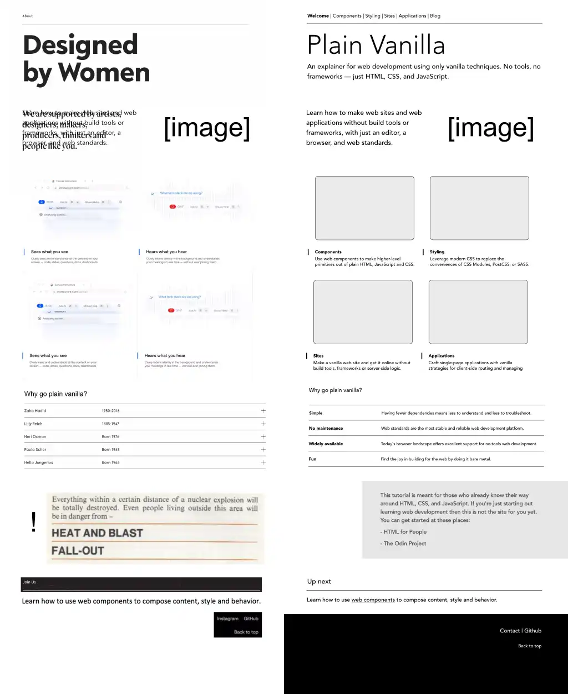
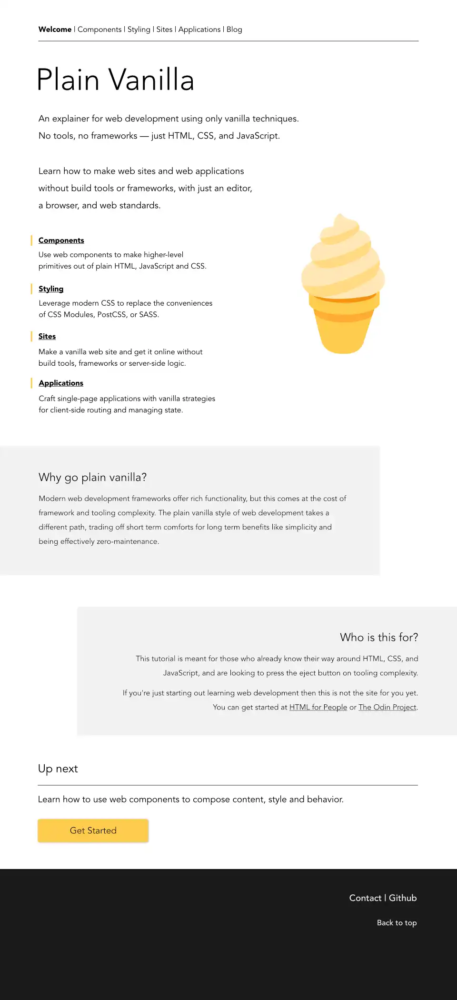

Design has never been the part of building for the web that I felt comfortable with. I would hide behind the shorthand "I'm not a designer" and just use someone else's design, or throw something together that I wasn't happy with. The original design of Plain Vanilla was shipped very much in that not-happy-with-it mindset.
So when I decided to finally take a web design course, settling on DesignAcademy.io and had to pick a project to apply the course's learnings to, turning this site's design into something I liked was top of mind. This article documents how and why the new design came about.
The course starts out by making you really think about the content that you want to apply a design to. They challenge you to make your web page work as a google doc, so I did precisely that. In revisiting the landing page and thinking through its text, about half of the characters were cut, without losing any of the meaning.
Lesson 1: less is more.
The next challenge the course throws at you is to decide on a style and to gather inspiration for your design. What I wanted the design of Plain Vanilla to communicate was a sort of timelessness, like a manual from an earlier time, that at the same time feels simple and fresh. In looking for inspiration I settled on Swiss style, the 1950's minimalist style that manages to feel modern and old at the same time. I absolutely adore the old manuals from the 50's, as in the image at the top of this page, where minimalist design relying heavily on typography and spacing brings the content to the foreground.
With this style and many googled-together examples of it as inspiration in hand, I took on the next challenge: make a first sketch of the design by simply copy pasting together elements of web sites and imagery that inspired you into a rough first outline. The second half of the challenge: take that design and layer your content over it. The result of this exercise was the initial redesign. Notice how the left half is literally copy pasted together bits of screenshots.

Lesson 2: taking ideas from everywhere is a quick way to get started.
The rest of the course was a series of design exercises on top of that initial draft, to choose fonts, colors, imagery, to apply a grid system and figure out spacing, and to sort out the finer aspects. Some elements of the initial redesign survived this process, others didn't, and what I ended up with in the final Affinity Designer file is pretty close to the shipping redesign.

Lesson 3: design doesn't have to be intimidating if you have the right process.
The actual work of translating of the design to code wasn't all that complicated. There was already a good baseline of semantic markup, so the redesign ended up mostly constrained to central CSS changes. Most of the time was taken up by responsiveness, something absent from the design mockup. Many of the final decisions on the exact behavior were made to favor code simplicity. This is for example why I decided not to add animations.
This is also why I chose the popover API as the strategy for having a responsive hamburger menu on small screens. While the popover API presently only has 87% support on caniuse.com, I felt that for the audience of this site support should be sufficient, and the dramatic code simplification it allowed was undeniable. The nav menu works without any JavaScript. It presents as a toggled menu by default, and uses CSS to become permanently visible on larger screens.
This was also a good opportunity to revisit the website's content. As it turns out, not a lot needed to change. Web standards don't actually change that often. I did update some parts where evolving baseline support took away caveats (for example, CSS nesting is now safe to use), and added some links to newly baseline features like popover, dialog and mutually-exclusive details.
Lesson 4: when you build on top of web standards, you don't need to do a lot of maintenance.
In the end, I'm finally happy with the design of Plain Vanilla. I still haven't gotten around to adding a dark mode, but it's on the todo list. There may be some hiccups with the new design, so if you see any please let me know by making an issue on GitHub. Do you like the new design, do you hate it? Please let me know.